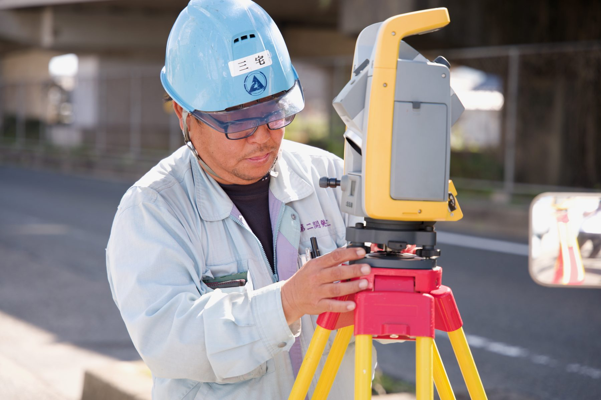
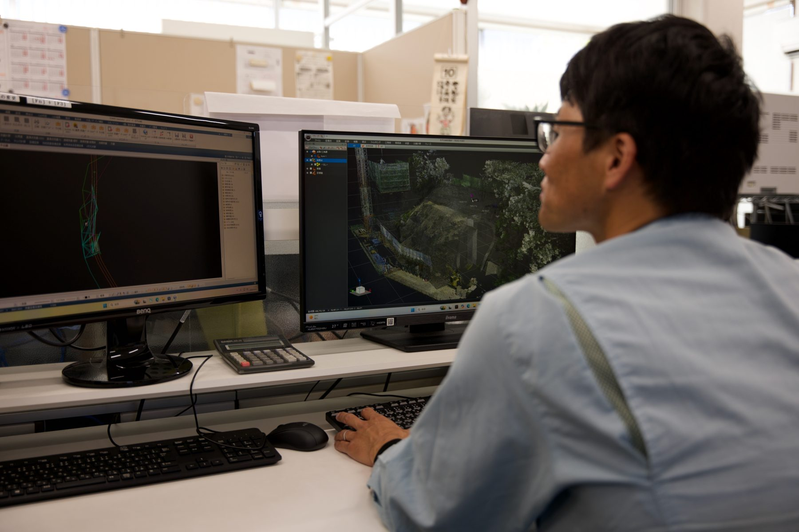

Service 01/03
3つの事業。一つの会社で。
「測量」「調査・設計」「施工管理」——専門の異なる3つの分野を、一つの会社で受け止めます。同じ会社の中で連携できるから、精度と工程の両面でお客様の負担を減らせます。
01
測量
SURVEY公共測量・工事測量・全国対応。TS・GNSS・ドローン・3Dスキャナーを駆使した、現場の“最初の一歩”。

02
調査・設計
DESIGN土木設計（道路・河川・造成）、地質調査、環境調査。測量と地続きで現場を読み解きます。

03
施工管理
MANAGEMENT測量会社ならではの現場支援。一般労働者派遣許可のもと、施工管理技術者を全国の現場へ派遣します。